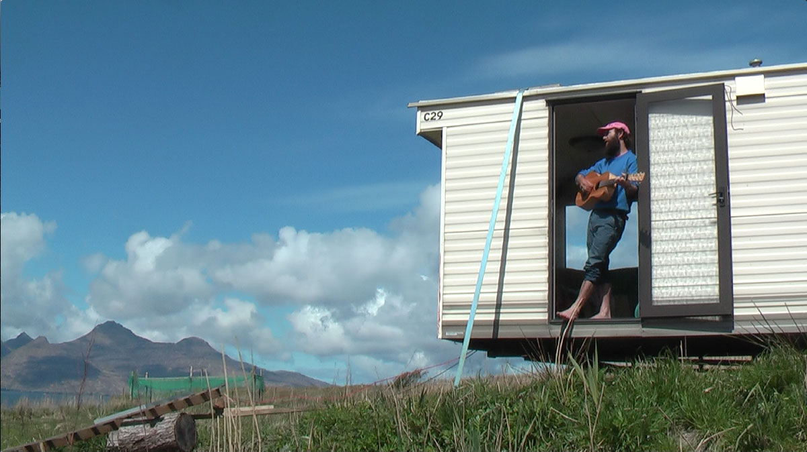

Hello, I'm a code cobbler who plys his trade from the sun-splashed realm of Glasgow.
I strive to use web technology to connect human experience in new and delightful ways.
I'm freelance – a web-hand for hire – so if you'd like a custom, handmade website, or just have some general programming that needs doing, then don't be shy.
–
I made a web-app called Jog Log that would log personal running activity because, for a few reasons, I was tired of using Strava to track my runs. So I experimented with the idea of an alternative that would encourage the more poetic, and reflective side of running. To focus more on thoughts & feelings than data & tracking.
For the front-end I used the React framework, and the back-end is a REST API 🌐 served by Node.js, utilising express. It features user creation and verification, as well as run & shoe creation.
Tumbleword LINK
Tumbleword is a web game I made that combines elements of Tetris and Wordle. You place falling letters to find a 5-letter word pre-selected by the computer. The speed increases as you successfully find words and clear previous letters. There is a leaderboard impemented that logs the 10 highest scores across all users.
The front-end is made with vanilla JS, and the leaderboard is an API 🌐 served by Node.js and express.js.
Still LifeLINK
A website and online shop Still Life, a local company who make furniture out of recycled plastic.
Living YourselfLINK
An album-player website that features a custom playlisting script. The click-able tracks are presented in a non-linear format across the page using SVG's to respond to user-actions and playlist progression.
The player itself allows skipping through the track via clicking in the play bar. There is also a lyric box that changes with the track.
Multi Mask LINK
Multi Mask, a small web-app that lets you make your own pixellated mask on a basic editor, then add it to the collection of masks.
The back-end is an API 🌐 served by Node.js and made with express.js. It includes a user storage and log-in, as well as mask storage. The front end, including an editor with draw, erase and fill functions with 20 pre-chosen colours, is built from the ground up with vanilla javascript. 🍦